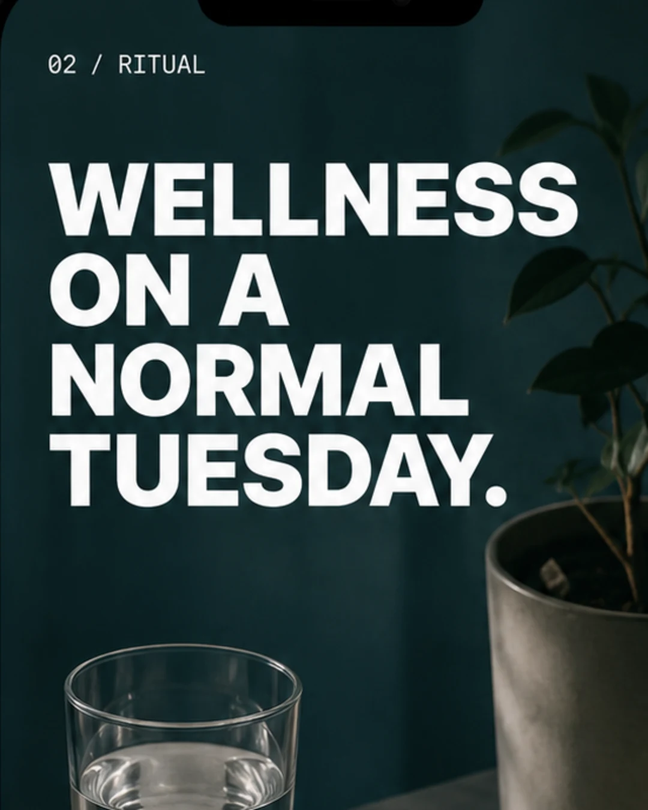
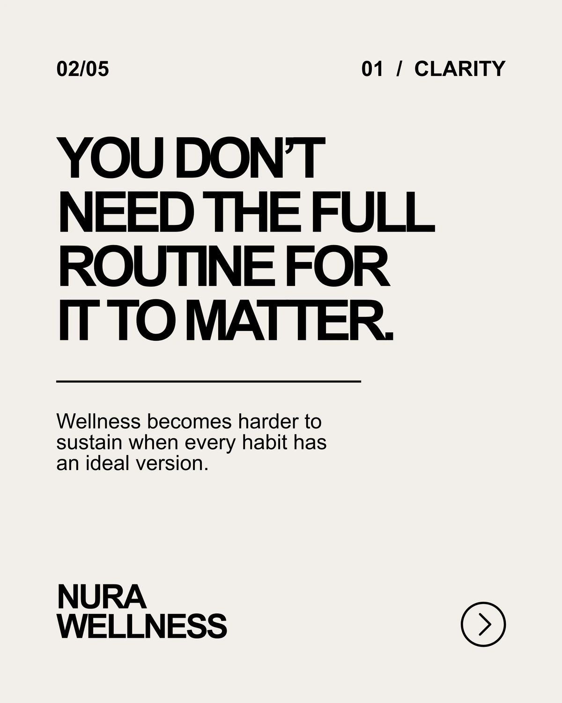
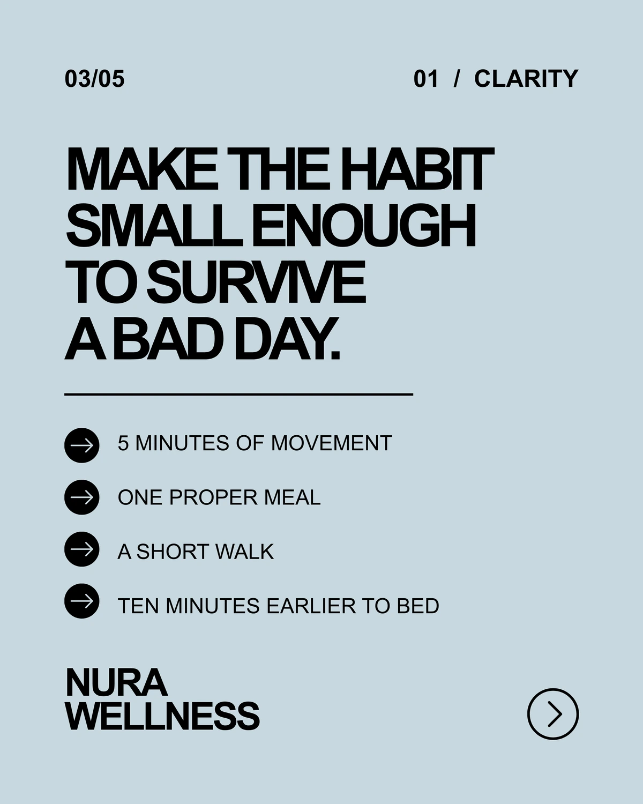
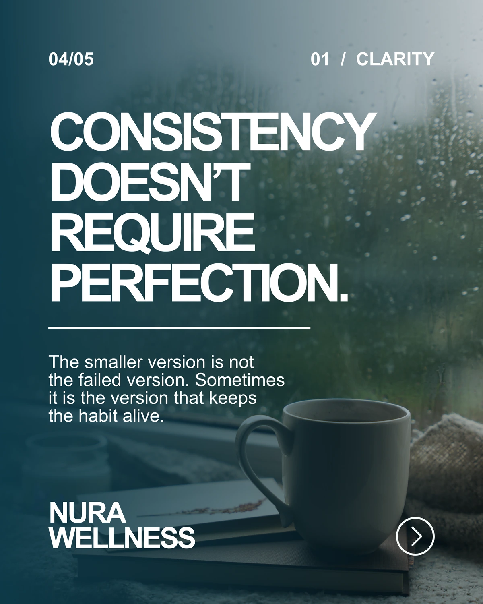
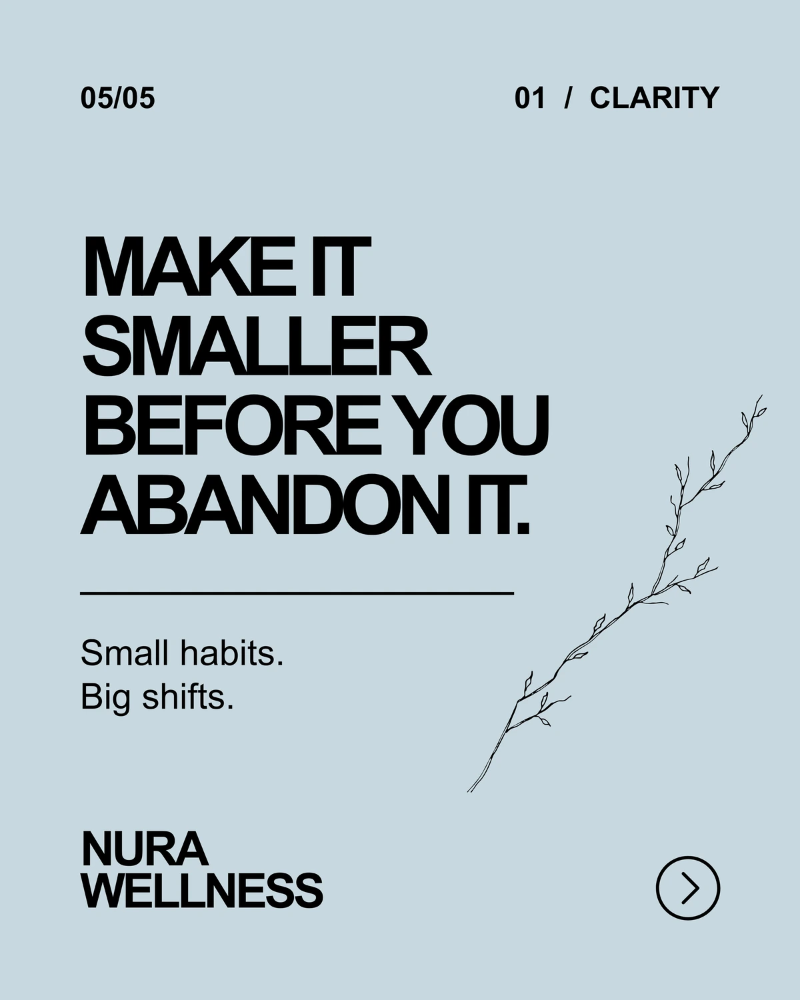

Say the useful thing before the impressive thing.
01 / Wellness / Social system
Nura Wellness
A contemporary wellness system built around clarity, ritual and small shifts. The goal is to make wellness feel useful and sustainable instead of becoming another performance standard.
Independent concept study / mock work / no client results implied



01 / Direction
WELLNESS WITHOUT THE PERFORMANCE.
WHAT NEEDED TO CHANGE
A contemporary wellness system built around clarity, ritual and small shifts. The goal is to make wellness feel useful and sustainable instead of becoming another performance standard.
HOW NURA SHOULD FEEL
Nura should feel like the person who explains something clearly, gives you one useful next step and does not make you feel behind.
PRINCIPLES
Four rules for keeping the system useful, grounded and recognisable.
Use real routines and realistic expectations.
Talk to people, not an abstract wellness consumer.
Make every piece of content answer an actual need.
02 / CONTENT SYSTEM
Consistency comes from a recognizable point of view and system, not from making every post look identical.
THE CONTENT HAS A JOB.
01 / CLARITYFIVE-MINUTE
VERSION.One useful idea at a time.
VERSION.One useful idea at a time.




CONTENT TERRITORIES
Recurring ways into the category, each with a different job.
Simple explanations, useful guidance and clearer language around wellness topics.
Realistic habits that fit into existing lives instead of demanding a reinvention.
Reframe wellness assumptions, myths and the pressure to optimize everything.
Connect products to a clear problem, context and routine rather than isolated features.
03 / EXECUTION
The system in use: different formats, same point of view.


TAKEAWAY
STRATEGY GIVES CONTENT DIRECTION.
The system keeps the subject useful, human and recognisable while giving every format a clear job.